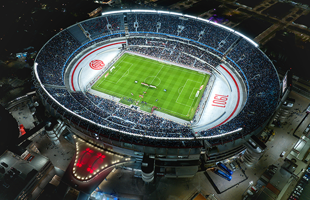
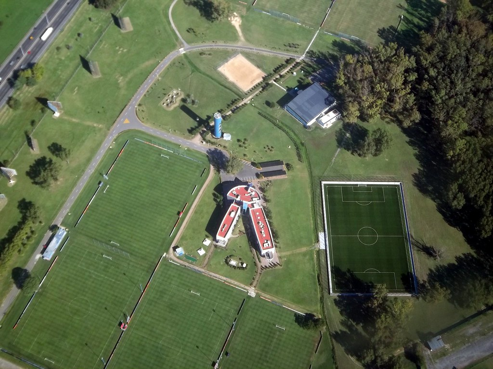

El seleccionado argentino juega la mayoría de sus partidos de local en el Estadio Mâs Monumental, también conocido como «El Monumental», propiedad del Club Atlético River Plate. Está ubicado en la ciudad de Buenos Aires, la capital del país, y posee una capacidad máxima para 83 000 espectadores sentados, aunque se han registrado partidos en los que se superó esa cantidad. Fue inaugurado el día 25 de mayo de 1938. Allí ha obtenido a lo largo del tiempo resultados muy favorables, y mantuvo un invicto de casi 20 años sin ser derrotado, desde 1995 en un amistoso contra Brasil 0-1 hasta octubre de 2015 por las eliminatorias a la Copa Mundial de 2018 contra Ecuador, por 0-2Si bien Argentina ha rotado su sede en algunos amistosos o en las eliminatorias, el Estadio Monumental es el que albergó más partidos en su historial.
En él se han desarrollado muchos eventos futbolísticos, tales como el Campeonato Sudamericano 1946, el Campeonato Sudamericano 1959, la Copa Mundial de Fútbol de 1978 y dos ediciones de la Copa América: 1987 y 2011.
La selección argentina cuenta con un predio de 48 hectáreas ubicado en el partido de Ezeiza, en la provincia de Buenos Aires, a la vera de la Autopista Ricchieri. El predio cuenta con tres complejos de alto nivel: uno de ellos lo utiliza la selección mayor, otro las selecciones juveniles y el tercero de apoyo logístico. El predio pone a disposición de los jugadores y entrenadores nueve estadios, de los cuales siete tienen las medidas reglamentarias y los otros dos con medidas reducidas. Además, recientemente fue construida una cancha para ser utilizada por la selección de fútbol playa. Sus instalaciones cuentan además con todo lo necesario para el alojamiento de los planteles, con habitaciones, cocinas, comedores, vestuarios, gimnasios, consultorios médicos, salas de conferencia, salas de vídeo y microcine.
El predio fue nombrado el 28 de octubre de 2014 como Julio Humberto Grondona, en honor al fallecido presidente de la AFA, cargo que ejerció durante 35 años. Posteriormente el 25 de marzo de 2023 pasó a llamarse Lionel Andrés Messi, en honor a su trayectoria como futbolista vistiendo la camiseta nacional por más de 20 años y la obtención del título mundial en 2022
